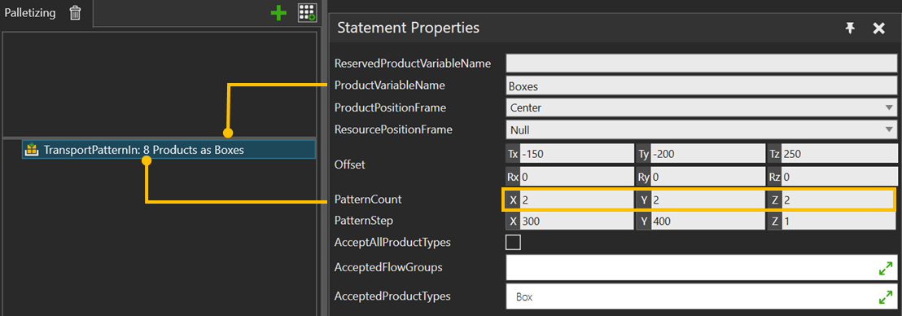

A TransportsPatternIn allows you to transport available product instances sequentially in a pattern.
TransportsPatternIn supports using products reserved by ReserveProduct statement. Define which reserved product are used by ReservedProductVariableName property. If there are pre-reserved products available, they get first filled in the pattern. Pattern can be partially or fully filled from pre-reserved products.
Used pre-reserved products are removed from the input list. If the it is a single value, variable is reset. If there are more pre-reserved products than fit in the pattern, the unused ones are left in the variable and can be used by other statements that support transporting them in.
A product matching the product filter is first reserved and then brought in using the transport system.
Note: Only Transport system is supported as source.

| Name | Description |
| ReservedProductVariableName | Product variable name defined in the Reserve Statement.
If ReservedProductVariableName is used, the process executor overrides the filtering properties (AcceptAllProductTypes, AcceptedFlowGroups, AcceptedProductTypes). |
| ProductVariableName | Product variable name that is to be transported out. |
ProductPositionFrame |
Frame location where the products are placed. |
ResourcePositionFrame |
Frame location where a resource will move while picking/placing part. |
Offset |
Offset of the first product from product position frame. |
PatternCount |
Number of product per X,Y,Z axis. |
PatternStep |
Step between products in pattern per X,Y,Z axis. |
AcceptAllProductTypes |
If selected, any product is accepted . |
AcceptedFlowGroups |
Allows only the selected flow groups. |
AcceptedProductTypes |
Allows only the selected product types. |